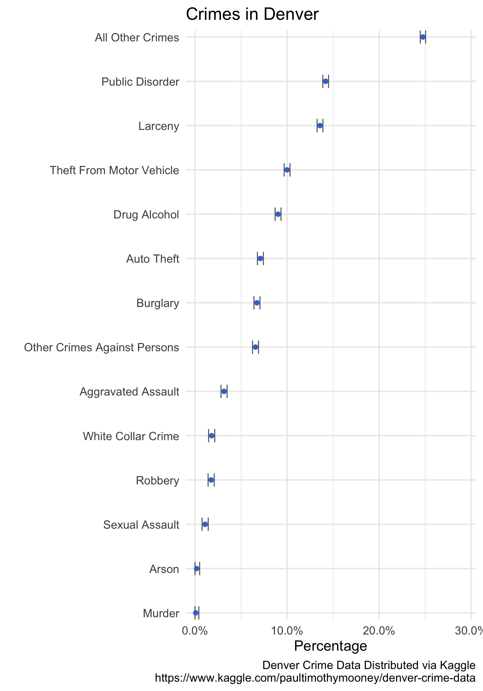

Visualizing uncertainty and creating pretty tables
Assigned 2/20/19, Due 2/27/19
Background
For this homework we will again use data from kaggle, this time looking at crime rates in Denver, CO.
Getting Started
You can download the data we’ll use for this homework either from kaggle or from canvas. Please visit the aforementioned link for a description of the data. We will be using the crime.csv file. Note that if you do download the data directly from kaggle your plots may not match mine exactly, given that the data are updated daily.
Assignment
- Select rows corresponding to a crime and reproduce the following plot. Note that because these are proportion data, I used the following formula to calculate the standard error \(\sqrt{(p(1-p) / n}\).

Visualize the same relation, but displaying the uncertainty using an alternative method of your choosing.
Reproduce the following plot. Use the
reported_dateto extract the year.
- Limit your data to the following. Note that only rows corresponding to a crime have been retained, and I have counted the number of rows (crimes) for each district in each year. I have stored this data frame in an object called
counts
## # A tibble: 42 x 3
## year district_id n
## <dbl> <dbl> <int>
## 1 2014 1 10519
## 2 2014 2 9287
## 3 2014 3 12041
## 4 2014 4 10039
## 5 2014 5 5801
## 6 2014 6 13118
## 7 2014 7 463
## 8 2015 1 11364
## 9 2015 2 10030
## 10 2015 3 13026
## # … with 32 more rowsFit the following model
m <- glm(n ~ I(factor(district_id)) + I(year - 2014),
data = counts)Extract the output using broom::tidy
tidied <- broom::tidy(m)Divide the probability space, [0, 1], into even bins of your choosing. For example, for 20 bins I could run the following
ppoints(20)## [1] 0.025 0.075 0.125 0.175 0.225 0.275 0.325 0.375 0.425 0.475 0.525
## [12] 0.575 0.625 0.675 0.725 0.775 0.825 0.875 0.925 0.975The coefficients (tidied$estimate) for each district in the model represent the difference in crime rates between the corresponding district (the integer at the end of tidied$term) and District 1 in 2014. For example, District 2 had an estimated 1290 fewer crimes than District 1. However, there is uncertainty in this estimate, with a standard error of 1912.79. The point estimate for a given district represents our “best guess” as to the true difference, and the likelihood of alternative differences are distributed around this point with a standard deviation equal to the standard error. We can simulate data from this distribution, if we choose, or instead just use the distribution to calculate different quantiles.
The qnorm function transforms probabilities, such as those we generated with ppoints, into values according to some pre-defined normal distribution (by default \(\mu = 0, \sigma = 1\)). For example qnorm(.75, mean = 100, sd = 10) provides the 75th percentile value from a distribution with a mean of 100 and a standard deviation of 10. We can therefore use qnorm in conjunction with ppoints to better understand the sampling distribution and, ultimately, communicate uncertainty. For example the following code generates the values corresponding to ppoints(20), or 2.5th to 97.5th percentiles of the distributions in 5 percentile “jumps”, for the difference in crime rates for District 1 and 2.
qnorm(ppoints(20),
mean = tidied$estimate[2],
sd = tidied$std.error[2])## [1] -5038.6713 -4043.1918 -3490.0464 -3077.3421 -2734.6189 -2433.0578
## [7] -2157.6196 -1899.1577 -1651.4110 -1409.6117 -1169.7216 -927.9223
## [13] -680.1757 -421.7137 -146.2755 155.2856 498.0088 910.7131
## [19] 1463.8585 2459.3379Using this procedure, replicate a plot like the following, but displaying the likelihood of the crime rate differences between District 4 and District 1 (e.g., you will need to use tidied$estimate[4] and tidied$std.error[4]). Make sure to put the values in a data frame, and create a new variable stating whether the difference is greater than zero (which you will use to fill by).
Note: Your probabilities will not directly correspond with the \(p\) values, which are essentially twice the probability you are displaying (because the test is two-tailed).
- Reproduce the following table
| Crimes Against Persons in Denver: 2014 to Present | |||||||
|---|---|---|---|---|---|---|---|
| Sample of three districts | |||||||
| Offense | Year | ||||||
| 2014 | 2015 | 2016 | 2017 | 2018 | 2019 | ||
| District 1 | |||||||
| Aggravated Assault | 276 | 280 | 319 | 369 | 390 | 47 | |
| Sexual Assault | 88 | 100 | 117 | 150 | 166 | 17 | |
| Murder | 7 | 5 | 3 | 4 | 6 | 1 | |
| Other Crimes Against Persons | 651 | 721 | 787 | 828 | 665 | 68 | |
| District 3 | |||||||
| Aggravated Assault | 269 | 296 | 297 | 311 | 329 | 43 | |
| Sexual Assault | 100 | 130 | 130 | 148 | 168 | 22 | |
| Murder | 7 | 10 | 8 | 9 | 10 | 0 | |
| Other Crimes Against Persons | 732 | 853 | 776 | 845 | 678 | 69 | |
| District 5 | |||||||
| Aggravated Assault | 198 | 203 | 226 | 177 | 257 | 42 | |
| Sexual Assault | 54 | 70 | 59 | 76 | 91 | 7 | |
| Murder | 5 | 7 | 9 | 6 | 8 | 0 | |
| Other Crimes Against Persons | 395 | 450 | 456 | 451 | 424 | 47 | |
| Denver Crime Data Distributed via Kaggle | |||||||